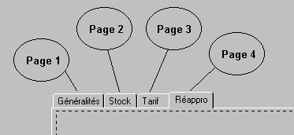

La création d'un groupe d'onglets s'effectue une fois pour toutes dans la boîte de dialogue Liste des onglets, accessible depuis le champ Onglet des paramètres de la page ou depuis le choix Onglets du menu Paramètres.
Le groupe d'onglets est identifié par un nom. Ce nom doit être saisi dans le champ Onglet des paramètres de la page (choix Page courante du menu Paramètres), pour chaque page où l'onglet doit apparaître.
Paramètres du groupe d'onglets
Le groupe d'onglets comporte une première série de paramètres, appelés paramètres généraux (point d'arrêt, tailles, etc.) et qui concernent toutes les pages où l'onglet est défini. Ces paramètres sont saisis par le choix Onglets du menu Paramètres ou dans les propriétés de l'objet onglet (accessibles en cliquant dans le corps de l'onglet d'une quelconque des pages concernées).
Paramètres d'un onglet proprement dit
Chaque onglet du groupe comporte une deuxième série de paramètres, locaux à la page correspondante (libellé, icone, fond, etc.). Il faut saisir ces paramètres pour chaque page concernée : sur chaque page, cliquez dans le corps de l'onglet pour afficher ses propriétés et saisissez les paramètres dans les propriétés de l'objet onglet.
Récapitulatif des étapes de création sur l'exemple suivant :

Créer un groupe d'onglets et saisissez ses paramètres généraux.
Déclarer l'onglet dans les paramètres généraux des pages 1, 2, 3 et 4.
Dans la première page (par exemple), ajustez la taille du corps de l'onglet.
Affichez successivement les 4 pages, cliquez à chaque fois dans le corps de l'onglet et saisissez les paramètres liés à la page dans la fenêtre des propriétés (objet onglet).
Remarque : Il n'est pas possible de placer des objets sur la ligne d'en-tête des onglets, même s'il reste de la place (derrière "Réappro" dans l'exemple).